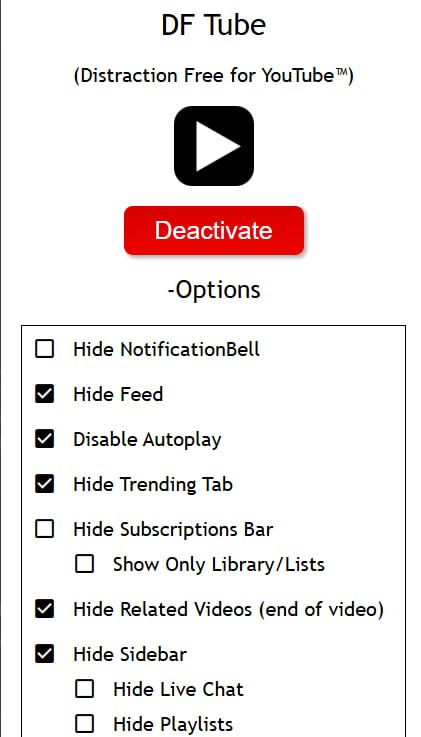

Если человека раздражает интерфейс YouTube, или он хочет избавиться от youtube-зависимости, он может поставить в браузер специальное расширение, которое скрывает рекомендации, шортсы, тренды и т. д.
Расширение называется DF Tube (Distraction Free for YouTube™).
Существует под FireFox:
https://addons.mozilla.org/en-US/firefox/addon/df-youtube/
И под Google Chrome (Cromium):
https://chromewebstore.google.com/detail/df-tube-distraction-free/mjdepdfccjgcndkmemponafgioodelna
Настройки данного плагина выглядят так:

Как видно, все настройки начинаются со слова "Hide", что по-русски переводится как "Cкрыть". Скрывая ненужные элементы, можно оставить только то, что действительно желательно видеть на данном видеохостинге. Для того, чтобы появилось это меню, надо нажать на надпись "+Options" (это не кнопка, это надпись, но она работает как кнопка). После чего надпись изменится на "-Options", а опции станут видны.